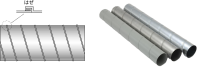
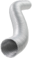

2023年
問題73 ダクトとその付属品に関する次の記述のうち，最も不適当なものはどれか．
（1）低圧ダクトの流速範囲は，15m/s以下である．
（2）フレキシブル継手は，ダクトと吹出口や消音ボックス等を接続する際に，位置調整のために設けられる．
（3）可変風量ユニットの動作形式には，絞り式とバイパス式がある．
（4）風量調整ダンパは，モータダンパの場合も，ダンパそのものの構造は手動ダンパと同等である．
（5）丸ダクトは，スパイラルダクトに比べて，はぜにより高い強度が得られる．
2023年
問題73 正解（5） 頻出度AAA
はぜを持ち強度の高いのはスパイラルダクトである．
スパイラルダクトは，亜鉛めっき鋼板を螺旋状に巻いて板の両端をハゼ折に重ねて作られる（2023-73-1図参照）．
現場で鉄板を丸めて製作される丸ダクトは工場生産品であるスパイラルダクトに代替された．

左図出典 METOREE
https://metoree.com/categories/2576/ を基に作成
右写真出典 フジモリ産業株式会社
https://www.fujimori.co.jp/products/building_materials/14
-(1) ダクトは，使用圧力，制限圧力，流速範囲で，低圧ダクト，高圧1ダクト，高圧2ダクトと分類されている（2023-73-1表参照）．
2023-73-1表 ダクトの呼称と圧力範囲
| 圧力分類による ダクト呼称 |
圧力範囲 | 流速範囲 ［m/s］ |
|
| 常用圧力［Pa］ | 制限圧力［Pa］ | ||
| 低圧ダクト | ＋490以下 −490以内 |
＋980以下 −735以内 |
15以下 |
| 高圧1ダクト | ＋490を超え＋980以下 −490を超え−980以内 |
＋1,470以下 −1,470以内 |
20以下 |
| 高圧2ダクト | ＋980を超え＋2,450以下 −980を超え−1,960以内 |
＋2,940以下 −2,450以内 |
20以下 |
注 1）常用圧力：通常運転の最大のダクト内の静圧をいう．
注 2）制限圧力：ダクト内のダンパの急閉などにより，一時的に圧力が上昇する場合の制限圧力をいう．制限圧力内ならばダクトの安全強度や空気漏れ量などは保持されているものとする．
注 3）高圧1ダクト・高圧2ダクトを排煙用ダクトに用いる場合の流速上限は，25m/s程度とする．
出典 公益社団法人 日本建築衛生管理教育センター
「新建築物の環境衛生管理」（平成31年3月31日 第1版第1刷）中227 表5-2-1(18)を基に作成
-(2) フレキシブルダクト（2023-73-2図，2023-73-3図参照）．
 出典 フジモリ産業株式会社
https://www.fujimori.co.jp/products/building_materials/28 を基に作成
-(3) 可変風量ユニット・バイパス式VAVと絞り式VAV（2023-73-4図）．
出典 空気調和・衛生工学会
http://www.shasej.org/gakkaishi/archive/pdf/SHASE19760600.pdf を基に作成
-(4) 2023-73-5図にモータダンパと手動ダンパの例を示す．
2023-73-5図 モータダンパと手動ハンドル式の多翼ダンパ
出典 株式会社 ダイリツ器販
https://dairitsu-kihan.co.jp/products/damper/motor_damper/2696/ を基に作成